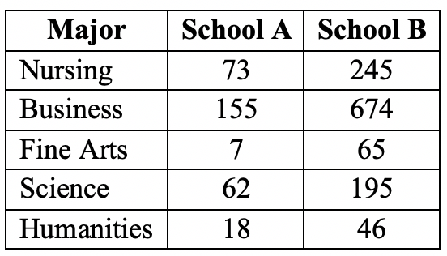
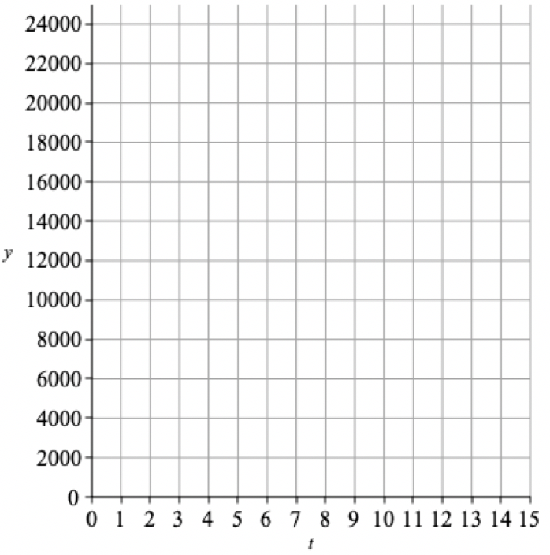
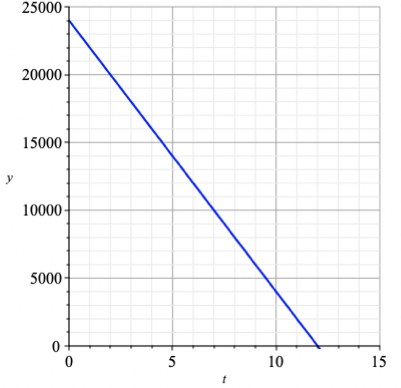

Section 2 Math 110/112/114/205 Prerequisite Problems
This is a short sentence
Exercises Exercises
1.
Fully simplify the following expressions (the):
- \(\displaystyle ((2t)^5)^3\)
- \(\displaystyle ((-g)^4)^4\)
- \(\displaystyle (6m^2n^{-1})^3\)
- \(\displaystyle \dfrac{(3w^2)^5}{(6w^{-2})^2}\)
- \(\displaystyle \dfrac{2x^2}{10x^7}\)
Solution
- \(\displaystyle ((2t)^5)^3 = 2^{5\cdot 3} \cdot t^{5\cdot 3} = 2^{15} t^{15}= {\color{blue} 32768 t^{15}}\)
- \(\displaystyle ((-g)^4)^4 = (-g)^{4\cdot 4} = g^{16}\)
- \(\displaystyle (6m^2n^{-1})^3 = 6^3 m^{(2\cdot3)}n^{(-1\cdot 3)}= \dfrac{6^3m^6}{n^3}= \dfrac{216m^6}{n^3}\)
- \(\displaystyle \dfrac{(3w^2)^5}{(6w^{-2})^2}= \dfrac{3^5w^{2\cdot 5}}{6^2w^{(-2\cdot 2)}} = \dfrac{3^5w^{10}}{6^2w^{-4}} = \dfrac{3^5w^{10}w^{4}}{6^2} = \dfrac{27w^{14}}{4}\)
- \(\displaystyle \dfrac{2x^2}{10x^7} = \dfrac{1}{5x^5}\)
2.
- Simplify the expression \(2(3x^2-8)-5x^2\text{.}\)
- Solve \(2(3x^2-8)-5x^2=0\) for \(x\text{.}\)
Solution
- \(2(3x^2-8)-5x^2 = 6x^2-16-5x^2=x^2-16\text{.}\)
- \begin{gather*} x^2-16 = 0\\ (x-4)(x+4)=0\\ x=4 \text{ or } x=-4 \end{gather*}
3.
The sophomore class of two different schools were surveyed. The following results show the declared majors.

- What percentage of sophomore students in School A major in Business?
- Which school has a higher percentage of sophomore students who major in Nursing?
Solution
- The total number of sophomore students in School A is \(315\text{.}\) So the fraction majoring in business is \(\dfrac{155}{315}=0.492\) and the percentage is \(49.2\%\text{.}\)
-
School A has \(315\) students and School B has \(1225\) students.
School A Nursing percentage: \(\dfrac{73}{315} \cdot 100 \% = 23.2 \%\)
School B Nursing percentage: \(\dfrac{245}{1225}\cdot 100 \% = 20 \%\)
So School A has a higher percentage of sophomore students who major in Nursing.
4.
Let \(f(t)=24000-2000t\) represent the value (in dollars) of a new car \(t\) years since it was purchased.
- Identify the slope of the function and interpret its meaning in practical terms.
- Identify the \(y\)-intercept of the function and interpret its meaning in practical terms.
- Evaluate \(f(3)\text{.}\)
- When will the value of the car equal \($14,000\text{?}\)
- Graph the function below. 
Solution
- Slope\(=-2000\text{,}\) which means that the value of the car decreases (or depreciates) by \($2000\) each year.
- The \(y\)-intercept is \(24000\text{,}\) which means the value of the new car at the time of purchase was \($24,000\text{.}\)
- \(\displaystyle f(3)=24000-2000(3)=$18,000\)
-
\begin{gather*} 24000-2000t = 14000\\ t=5 \end{gather*}
After \(5\) years, the value of the car will be \($14,000\text{.}\)
- The function is graphed below. 